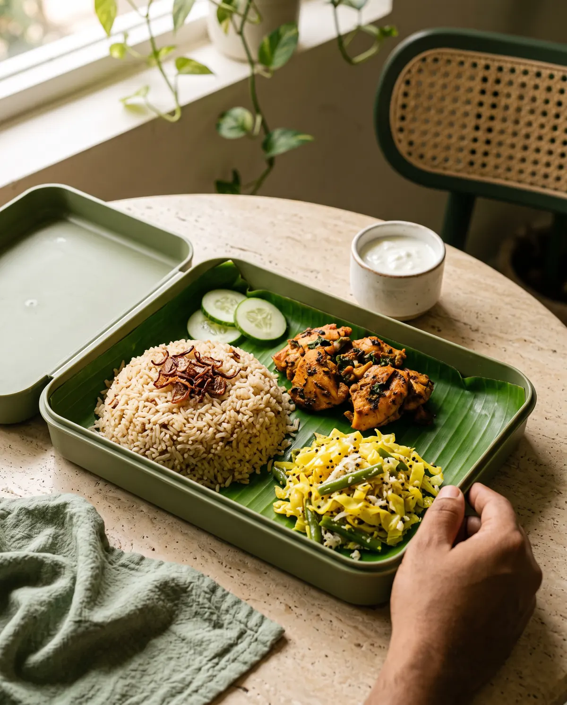

Rice, with room
for more.
When rice takes over the plate, protein and vegetables can get pushed aside. Keep the rice. Make space for the rest.
A considered base, not a ban on carbs.
ഇഷ്ടമുള്ള ഭക്ഷണം.
നല്ലൊരു ശീലം.
The flavours you love. Portions with a purpose.
And one less thing to plan tomorrow.
Build a lunch you look forward to. Kozhikode launch preview.

Kerala food belongs in your life. The opportunity is in how much we serve, what we pair it with, and how often we repeat it.
When rice takes over the plate, protein and vegetables can get pushed aside. Keep the rice. Make space for the rest.
Fat is part of a healthy diet. Free-pouring makes it harder to know the amount. Our approach measures added oil and counts coconut, ghee and other fats too.
Chicken, fish, eggs or soy and kadala: each signature meal has a defined protein component, alongside familiar staples and sides.
Better eating does not need a new cuisine.
It needs a routine you can come back to.
Choose a familiar base, a protein and your sides. Enable JavaScript to customise.
Start with a familiar base. Pair it with a defined protein serving and the right sides. Explore the proposed Malabar Grill Biryani combination.
Recipe-development guide: cooked component weights, not nutrition values. The right meal size depends on your needs and the rest of your day.
In running, the gym or a team sport, a coach helps turn a goal into a plan. Roza brings that thinking to everyday food: a clear menu, a practical portion and a repeatable rhythm.
Find my rhythmKnow what is on your plate and why it is there.
Build around familiar tastes you want to repeat.
Choose ahead, eat on schedule, review what works.
Roza Labs is our R&D home. Roza Eats brings the menu to your routine. Our development method puts the chef, nutrition thinking and measured recipes at the same table.
Record raw ingredients, added oil, coconut, salt and batch yield. A recipe should be repeatable, not dependent on a guess.
Version-controlled recipesCompare recipe trials for aroma, spice, texture and satisfaction. Reducing oil is useful only when the dish still deserves a second order.
Structured taste trialsCheck cooked portions, serving consistency, allergens and how the meal travels. Nutrition calculations must match the final recipe.
Portion & delivery checks“Lower calorie” and “high protein” need evidence. We will publish verified values and fair comparisons before using those claims.
Choose your meal at least 24 hours ahead. Our proposed lunch service brings a fixed delivery window to your workday.
Pick your meal and a lunch window. Every order locks 24 hours before its slot begins.
Ingredients, portions and routes are planned in advance. The meal is prepared for your delivery day.
A chosen time window. A familiar meal. Less last-minute deciding.
12:00–12:30 / 12:30–13:00 IST
Starting with lunch in Kozhikode.
Service areas and capacity confirmed at launch.
നാളത്തെ ഭക്ഷണം, ഇന്ന് തന്നെ പ്ലാൻ ചെയ്യാം.
Build my bowl